2023-03-03 SVD Geometry#
Last time#
Comparison of interfaces
Profiling
Cholesky QR
Matrix norms and conditioning
Today#
Solving least squares problems
Geometry of the SVD
using LinearAlgebra
using Plots
default(linewidth=4, legendfontsize=12)
function vander(x, k=nothing)
if isnothing(k)
k = length(x)
end
m = length(x)
V = ones(m, k)
for j in 2:k
V[:, j] = V[:, j-1] .* x
end
V
end
function gram_schmidt_classical(A)
m, n = size(A)
Q = zeros(m, n)
R = zeros(n, n)
for j in 1:n
v = A[:,j]
R[1:j-1,j] = Q[:,1:j-1]' * v
v -= Q[:,1:j-1] * R[1:j-1,j]
R[j,j] = norm(v)
Q[:,j] = v / R[j,j]
end
Q, R
end
function qr_householder(A)
m, n = size(A)
R = copy(A)
V = [] # list of reflectors
for j in 1:n
v = copy(R[j:end, j])
v[1] += sign(v[1]) * norm(v) # <---
v = normalize(v)
R[j:end,j:end] -= 2 * v * v' * R[j:end,j:end]
push!(V, v)
end
V, R
end
function qr_chol(A)
R = cholesky(A' * A).U
Q = A / R
Q, R
end
function qr_chol2(A)
Q, R = qr_chol(A)
Q, R1 = qr_chol(Q)
Q, R1 * R
end
qr_chol2 (generic function with 1 method)
Condition number of the matrix#
The condition number of matrix-vector multiplication depends on the vector. The condition number of the matrix is the worst case (maximum) of the condition number for any vector, i.e.,
If \(A\) is invertible, then we can rephrase as
Evidently multiplying by a matrix is just as ill-conditioned of an operation as solving a linear system using that matrix.
Matrix norms induced by vector norms#
Condition number via SVD#
Or, in terms of the SVD
where
Least squares and the normal equations#
A least squares problem takes the form: given an \(m\times n\) matrix \(A\) (\(m \ge n\)), find \(x\) such that
Is this the same as saying \(A^T (A x - b) = 0\)?
If \(QR = A\), is it the same as \(Q^T (A x - b) = 0\)?
We showed that \(QQ^T\) is an orthogonal projector onto the range of \(Q\). If \(QR = A\),
The Professional’s Way: QR (Householder)#
Solve \(R x = Q^T b\).
QR factorization costs \(2 m n^2 - \frac 2 3 n^3\) operations and is done once per matrix \(A\).
Computing \(Q^T b\) costs \(4 (m-n)n + 2 n^2 = 4 mn - 2n^2\) (using the elementary reflectors, which are stable and lower storage than naive storage of \(Q\)).
Solving with \(R\) costs \(n^2\) operations. Total cost per right hand side is thus \(4 m n - n^2\).
This method is stable and accurate.
The 737 MAX Way: Cholesky/Normal Equations#
fast, unregulated, and dangerous#
The mathematically equivalent form \((A^T A) x = A^T b\) are called the normal equations. The solution process involves factoring the symmetric and positive definite \(n\times n\) matrix \(A^T A\).
Computing \(A^T A\) costs \(m n^2\) flops, exploiting symmetry.
Factoring \(A^T A = R^T R\) costs \(\frac 1 3 n^3\) flops. The total factorization cost is thus \(m n^2 + \frac 1 3 n^3\).
Computing \(A^T b\) costs \(2 m n\).
Solving with \(R^T\) costs \(n^2\).
Solving with \(R\) costs \(n^2\). Total cost per right hand side is thus \(2 m n + 2 n^2\).
The product \(A^T A\) is ill-conditioned: \(\kappa(A^T A) = \kappa(A)^2\) and can reduce the accuracy of a least squares solution.
The Prepper’s Way: Singular Value Decomposition#
where \(U\) and \(V\) have orthonormal columns and \(\Sigma\) is diagonal with nonnegative entries. The entries of \(\Sigma\) are called singular values and this decomposition is the singular value decomposition (SVD). It may remind you of an eigenvalue decomposition \(X \Lambda X^{-1} = A\), but
the SVD exists for all matrices (including non-square and deficient matrices)
\(U,V\) have orthogonal columns (while \(X\) can be arbitrarily ill-conditioned). Indeed, if a matrix is symmetric and positive definite (all positive eigenvalues), then \(U=V\) and \(\Sigma = \Lambda\). Computing an SVD requires a somewhat complicated iterative algorithm, but a crude estimate of the cost is \(2 m n^2 + 11 n^3\). Note that this is similar to the cost of \(QR\) when \(m \gg n\), but much more expensive for square matrices. Solving with the SVD involves
Compute \(U^T b\) at a cost of \(2 m n\).
Solve with the diagonal \(n\times n\) matrix \(\Sigma\) at a cost of \(n\).
Apply \(V\) at a cost of \(2 n^2\). The total cost per right hand side is thus \(2 m n + 2n^2\).
SVD gives the unique minimum norm solution when \(A\) is rank deficient#
Activity: Geometry of the Singular Value Decomposition#
default(aspect_ratio=:equal)
function peanut()
theta = LinRange(0, 2*pi, 50)
r = 1 .+ .4*sin.(3*theta) + .6*sin.(2*theta)
r' .* [cos.(theta) sin.(theta)]'
end
function circle()
theta = LinRange(0, 2*pi, 50)
[cos.(theta) sin.(theta)]'
end
function Aplot(A)
"Plot a transformation from X to Y"
X = peanut()
Y = A * X
p = scatter(X[1,:], X[2,:], label="in")
scatter!(p, Y[1,:], Y[2,:], label="out")
X = circle()
Y = A * X
q = scatter(X[1,:], X[2,:], label="in")
scatter!(q, Y[1,:], Y[2,:], label="out")
plot(p, q, layout=2)
end
Aplot (generic function with 1 method)
Aplot(1.5*I)
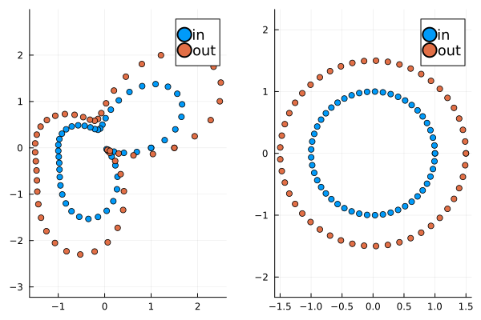
Diagonal matrices#
Perhaps the simplest transformation is a scalar multiple of the identity.
Aplot([.4 0; 0 1.1])
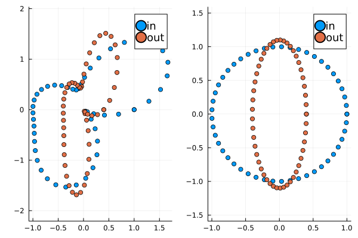
The diagonal entries can be different sizes.
Aplot([2 0; 0 .5])
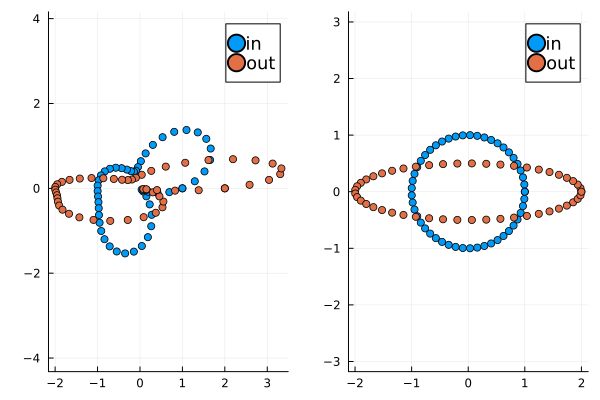
The circles becomes an ellipse that is aligned with the coordinate axes
Givens Rotation (as example of orthogonal matrix)#
We can rotate the input using a \(2\times 2\) matrix, parametrized by \(\theta\). Its transpose rotates in the opposite direction.
function givens(theta)
s = sin(theta)
c = cos(theta)
[c -s; s c]
end
G = givens(pi/2)
Aplot(G)
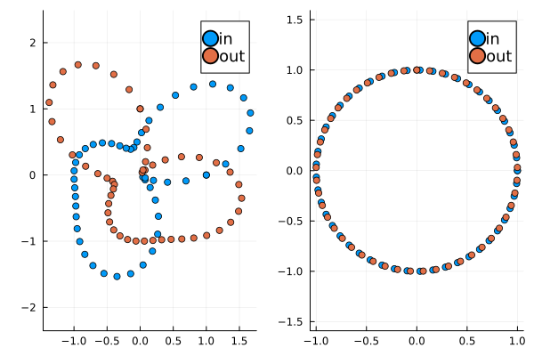
Aplot(G')
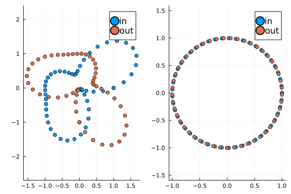
Reflection#
We’ve previously seen that reflectors have the form \(F = I - 2 v v^T\) where \(v\) is a normalized vector. Reflectors satisfy \(F^T F = I\) and \(F = F^T\), thus \(F^2 = I\).
function reflect(theta)
v = [cos(theta), sin(theta)]
I - 2 * v * v'
end
Aplot(reflect(0.3))
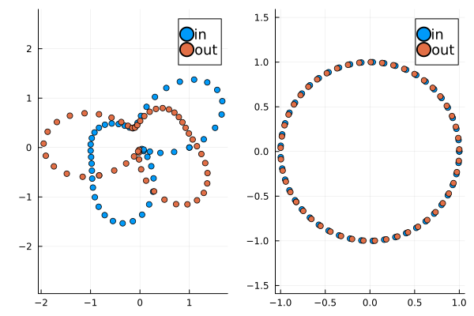
Singular Value Decomposition#
The SVD is \(A = U \Sigma V^T\) where \(U\) and \(V\) have orthonormal columns and \(\Sigma\) is diagonal with nonnegative entries. It exists for any matrix (non-square, singular, etc.). If we think of orthogonal matrices as reflections/rotations, this says any matrix can be represented as reflect/rotate, diagonally scale, and reflect/rotate again.
Let’s try a random symmetric matrix.
A = randn(2, 2)
A += A' # make symmetric
@show det(A) # Positive means orientation is preserved
Aplot(A)
det(A) = -0.6568187081280155
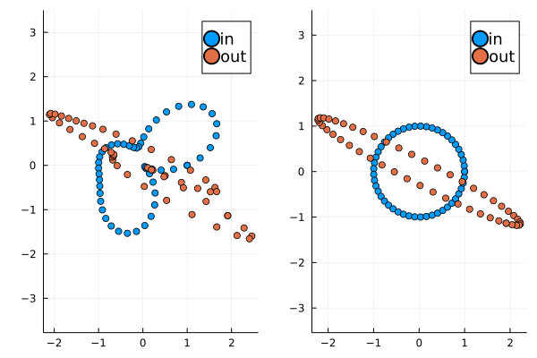
U, S, V = svd(A)
@show S
@show norm(U * diagm(S) * V' - A) # Should be zero
@show det(U), det(V)
Aplot(V') # Rotate/reflect in preparation for scaling]
S = [2.5075313675803934, 0.26193838155723803]
norm(U * diagm(S) * V' - A) = 9.992007221626409e-16
(det(U), det(V)) = (-1.0000000000000002, 0.9999999999999998)
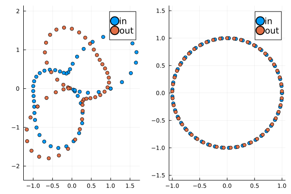
What visual features indicate that this is a symmetric matrix?
Is the orthogonal matrix a reflection or rotation?
Does this change when the determinant is positive versus negative (rerun the cell above as needed).
Parts of the SVD#
Aplot(diagm(S)) # scale along axes
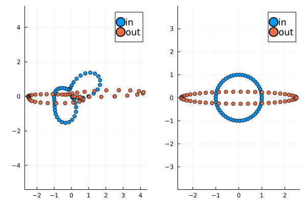
Aplot(U) # rotate/reflect back
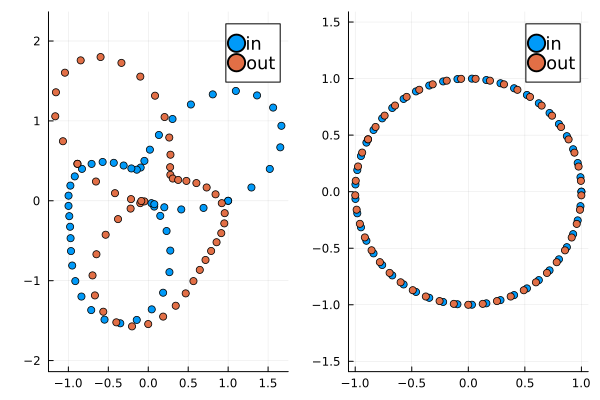
Putting it together#
Aplot(U * diagm(S) * V')
Observations#
The circle always maps to an ellipse
The \(U\) and \(V\) factors may reflect even when \(\det A > 0\)
What makes a matrix ill-conditioned?#
A = [10 5; .9 .5]
@show cond(A)
svdvals(A)
cond(A) = 252.116033572376
2-element Vector{Float64}:
11.22755613596245
0.0445332888070338
m = 100
x = LinRange(-1, 1, m)
A = vander(x, 20)
@show cond(A)
svdvals(A)
cond(A) = 7.206778416853811e6
20-element Vector{Float64}:
11.510601491136654
8.993572449917352
5.907360126610745
3.6029154831946064
1.9769729310318853
1.098310376576986
0.5392322016751737
0.2820042230178553
0.12425066006852684
0.06183086124622112
0.024242929146349384
0.011556331531623212
0.003964435582121844
0.0018189836735690052
0.0005298822985647027
0.00023487660987952337
5.4870893944525604e-5
2.3566694052620285e-5
3.8286365250847765e-6
1.597190981232044e-6
Orthogonal transformations don’t affect singular values (or conditioning)#
A = [3 0; 0 .5]
Q, _R = qr(randn(2,2))
B = Q * A * Q'[]
U, S, V = svd(randn(2,2))
@show S
@show S[1] / S[end]
Aplot(diagm(S))
S = [1.4468451790283559, 0.6640030556875769]
S[1] / S[end] = 2.1789736758517533
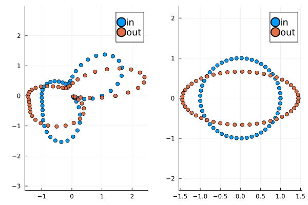